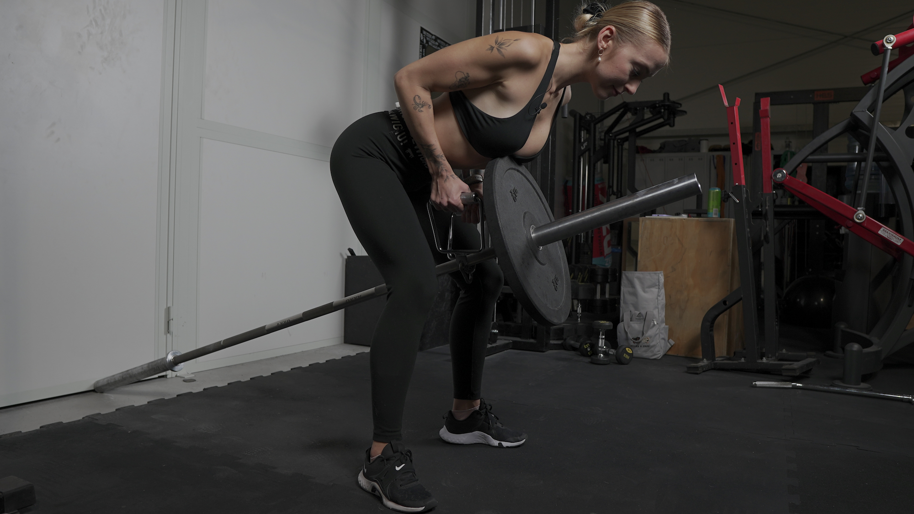
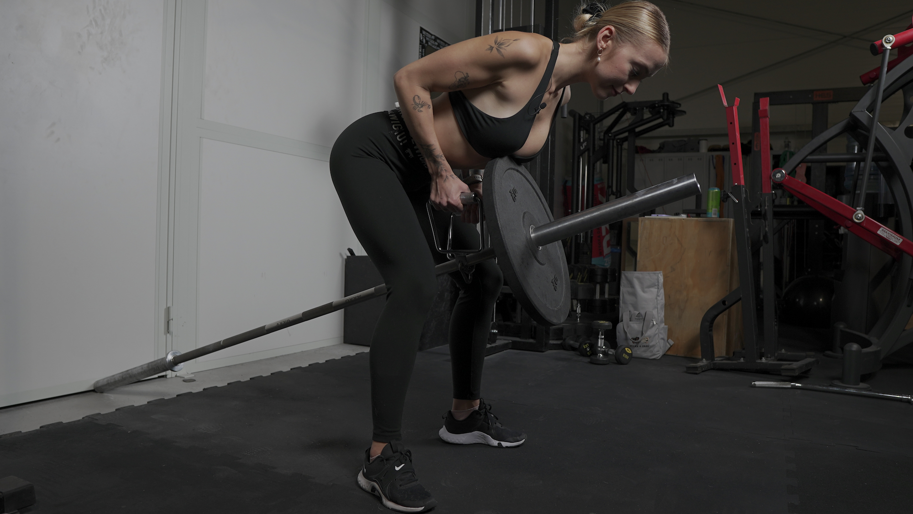

WIOSŁOWANIE KOŃCEM SZTANGI
 

1. Jedną stronę sztangi przymocuj, tak aby była stabilna. Może do tego posłużyć specjalny sprzęt trzymający sztangę, gotowa maszyna do tego rodzaju wiosłowań lub po prostu róg pomieszczenia.
2. Na drugiej stronie sztangi umieść ciężar oraz uchwyt trójkątny, który pozwoli Ci na stabilne utrzymanie sztangi.
3. Ugnij kolana, napnij brzuch, ściągnij łopatki.
4. Głowa powinna stanowić przedłużenie tułowia.
5. Rozpocznij ruch przyciągania sztangi w okolice Twojego brzucha. Skup się na tym, aby zbliżyć do siebie łopatki.
6. Kontrolując ruch, powróć do pozycji początkowej.
To ćwiczenie najlepiej wykonywać na specjalnie przygotowanej do niego maszynie, być może znajdziesz ją na swojej siłowni. To znacząco ułatwi Ci cały proces.